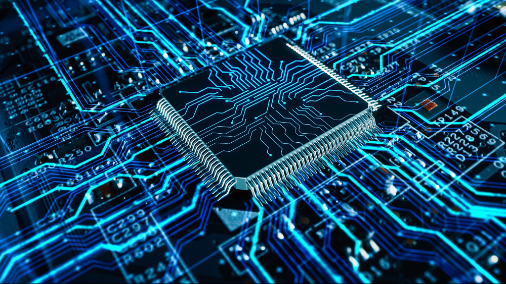

¿Qué es la Computación Cuántica?
La computación cuántica utiliza los principios de la mecánica cuántica para procesar información de manera exponencialmente más rápida que los computadores tradicionales.
Los ordenadores cuánticos funcionan con qubits, que pueden estar en múltiples estados al mismo tiempo gracias a la superposición cuántica. Esto les permite realizar cálculos paralelos de una manera inalcanzable para los ordenadores clásicos.
← Volver al inicio